O problema
A solicitação de 2 via da emissão da CIN traz burocracia para o requerente, ainda que a primeira via esteja em data de validade aceita
O requerente (ainda que exista a CIN digital válida e a extraviada com data de validade dentro do prazo) precisa se dirigir a um posto de identificação e realizar nova coleta biométrica bem como apresentar documentação para a solicitação da segunda via
O tempo médio para a entrega do documento são 15 dias, acontece retrabalho para os servidores e o requerente pode ter custos com a solicitação
AS-IS · o processo antes do MVP
O caminho real, com quem faz, o que entra, onde espera e o que é automatizável. Fonte: tabela AS-IS do projeto.

Fluxograma AS-IS · amarelo: etapa manual; tracejado: ponto de espera. Os números correspondem à tabela. Fonte Mermaid.
| Etapa | Quem faz | Entra | Ação | Sai | Sistema | Regra | Onde espera | Tempo | Automatizável |
|---|---|---|---|---|---|---|---|---|---|
| Solicitação | Requerente | Dados biométricos e biográficos | Cadastro | Prontuário | Sistema | Dados conferem com o registro civil | Análise e Confronto | 1 | Sim, com apoio humano |
| Análise e Confronto | Papiloscopista | Prontuário | Análise e Confronto | Prontuário | Sistema | Confronto quando houver dúvida | Impressão | 72 | Sim, com apoio humano |
| Impressão | Parque gráfico | Prontuário | Impressão | Cédula/cartão | Papel/Sistema | Validação pela Receita Federal | Expediente | 168 | Sim, com regra clara |
| Envio ao posto | Setor de expediente | Cédulas/cartão | Envio dos documento | Cédulas | Sistema/Papel | Posto de destino correto | Posto de Identificação | 48 | Não |
| Entrega ao Requerente | Posto de Identificação | Cédulas/Cartões | Entrega ao requerente | Cédulas/cartões | Papel/Sistema | Documento entregue ao titular | Arquivo | Não |
TO-BE · o processo com o MVP
O que muda em cada etapa, quem passa a fazer e o ganho esperado. Fonte: tabela TO-BE do projeto.

Fluxograma TO-BE · verde: máquina (automação local); azul: pessoa (fé pública). Fonte Mermaid.
Quando esse processo existir, o requerente deixa de esperar tanto tempo para a emissão da segunda via e passa a ter o documento com mais agilidade.
- Solicitação
Processo por app
A máquina (automação)Agilidade no processo - Confronto papiloscópico
Não muda, permanece no sistema
A pessoa, sem mudançaPermanece com prazo menor - Impressão
Não muda
A máquina (automação)Agilidade no processo - Envio ao posto
Não muda
A pessoa assistida pela máquinaMaior agilidade - Entrega ao requerente
Tempo menor
A pessoa, sem mudançaMenor prazo de entrega
| Etapa | O que muda | Quem faz | Benefício | Esforço |
|---|---|---|---|---|
| Solicitação | Processo por app | A máquina (automação) | Agilidade no processo | Alto |
| Confronto papiloscópico | Não muda, permanece no sistema | A pessoa, sem mudança | Permanece com prazo menor | Médio |
| Impressão | Não muda | A máquina (automação) | Agilidade no processo | Baixo |
| Envio ao posto | Não muda | A pessoa assistida pela máquina | Maior agilidade | Baixo |
| Entrega ao requerente | Tempo menor | A pessoa, sem mudança | Menor prazo de entrega | Baixo |
O que o MVP entrega
Tela-assinatura: Caixa de entrada: fila à esquerda e pedido à direita, com Aceitar e próximo.
Menu do MVP: FilaIndicadoresConfiguração
Regras de negócio
| ID | Regra | Quando | Tipo | Exceção |
|---|---|---|---|---|
RN01 | Precisa de CPF válido | Todos os casos | Validação | Não tem |
RN02 | Precisa da Biometria coletada | Todos os cados | Validação | Não tem |
RN03 | Só segue a distância se a primeira via estiver válida e não houver mudança de dados | No pedido | Negócio | Os demais casos são orientados a ir ao posto |
RN04 | Foto obrigatória de rosto e de documento, legível | No pedido | Validação | Nenhuma |
RN05 | Recusa sempre com motivo, que o cidadão vê no protocolo | Na conferência | Negócio | Nenhuma |
RN06 | Pedido e foto apagados após o lançamento ou a recusa | Após a decisão | LGPD | Nenhuma |
Papéis
| Papel | Quem é | O que vê | O que faz | O que não faz | Registro |
|---|---|---|---|---|---|
| Cadastro | Atendente do posto de identificação | Página de cadastro biográfico e biométrico | Cadastro e Coleta Biométrica | Preencher incorretamente, não coletar a biometia, não enviar, via sistema, o prontuário | Prontuário |
| Análise e Confronto | Papiloscopistas | Página do sistema com os dados e a biometria | Analisa os documentos e confronta as impressões digitais, se necessário | Demorar para o atendimento, não realizar o confronto, não enviar para o sistema | Prontuário/Impressão |
| Impressão | Parque gráfico - empresa licitada | Sistema de impressão | Impressão das cédulas/cartões | Não imprimir, imprimir duplicado | Cédulas/cartões da CIN |
| Envio ao postos | Setor de expediente | Documento físico e sistema para dar baixa | Recebe os documentos, dá baixa no sistema e encaminha para o posto de identificação | Extraviar documentos, Envio para posto incorreto, atrasar no envio | Baixa "enviado ao posto" |
| Entrega ao requerente | Atendente do Posto de Identificação | Sistema e documento físico | Entrega ao requerente o documento | Extraviar, entregar incorretamente | Baixa no sistema |
Métricas do piloto
Como testar
O MVP é um `index.html` offline, com dados fictícios. Abra index.html.
cd Apps/cin-segunda-via python construir.py python testes/testar.py python testes/cenarios.py python testes/jornada.py # Lightpanda (via WSL, CDP em 9222 e HTTP em 8000) python testes/jornada.py --cdp http://127.0.0.1:9222 --base http://127.0.0.1:8000
Documentos: PROJETO.md · sprint.md · README.md